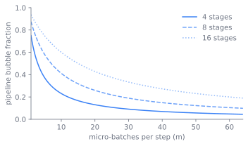
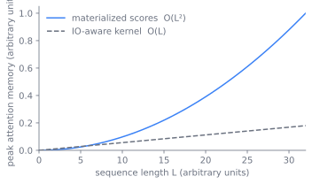

8 Training at Scale: Stability and Distributed Parallelism
A frontier model does not fit on one accelerator, and the run that produces it spans thousands of them for weeks. The moment the work is split across that many devices, three resources start to fight: the memory each shard must hold, the communication that keeps the shards consistent, and the failures that a fleet of that size produces as its steady state. Everything in this chapter is a way of spending those three against each other so that achieved throughput stays high and a dead GPU costs minutes, not days. This chapter takes the machinery apart along that seam. It opens on the three forces, then works through the cuts that split the model and what each one costs to communicate, the bits the arithmetic runs in, and the overlap that hides the traffic, with each tool’s origin attached to the mechanism it explains. One number, model FLOPs utilization, runs through the whole teardown as the scoreboard that says whether the systems work is done.
8.1 Three forces that fight
Two facts force everything that follows. A frontier model’s parameters, gradients, and optimizer state do not fit in one device’s memory, and the arithmetic to train it does not finish on one device in any acceptable time. So the work is split across thousands of accelerators, and the moment it is split, three constraints start to fight.
The first is memory: weights, the Adam moments whose state dominates (see sec-scaling-laws), activations, and gradients must each find a home, and peak activation memory grows with sequence length. The second is communication: every split introduces traffic to keep the shards consistent, and that traffic competes with compute for the same time budget. The third is failure: at thousands of nodes for weeks, a dead GPU or NIC is the steady state, not the exception, and a single one kills the whole collective. The job of the training-systems layer is to spend memory, communication, and recovery against each other so that achieved throughput stays high and a failure costs minutes, not days. No single way of splitting the work resolves all three at once, which is why the design offers several orthogonal cuts and composes them.
8.2 Four cuts, and what each one costs
Each axis answers a different scaling problem, shards a different resource, and arrived in the literature when the previous generation hit a wall. Read in that order they are less a menu than a record of how the toolkit was assembled, one cut at a time.
Tensor parallelism (TP) came first. It shards individual matmuls inside a layer, splitting attention heads and the feed-forward columns and rows across devices. Megatron-LM showed how to do this with only two all-reduces per layer, which made a multi-billion-parameter model trainable once it no longer fit on one device (Shoeybi et al. 2019). The cost is that it is communication-heavy: each TP layer needs an all-reduce (or a reduce-scatter and all-gather pair) on the critical path of every forward and backward step. That cost is only affordable over the fastest interconnect, so TP stays inside a node.
Pipeline parallelism (PP) arrived in parallel and cuts a different resource. It splits the layer stack into stages placed on different nodes and streams micro-batches through them, so stage two works on micro-batch one while stage one works on micro-batch two. GPipe established the micro-batching that keeps the stages busy (Huang et al. 2019), and PipeDream generalized the schedule to cut the bubble (Narayanan et al. 2019). PP is bandwidth-cheap, moving only the activations at stage boundaries, but it pays a pipeline bubble: the fill and drain at the ends of each step where some stages sit idle. Figure fig-training-bubble shows where that idle time lives.
Data parallelism (DP) replicates the model and shards the batch across replicas; each replica computes gradients on its slice and an all-reduce averages them. Plain DP does not save memory, since every replica holds a full copy. ZeRO observed that the optimizer state, gradients, and parameters in standard DP are redundantly replicated, and sharded them across the DP group in three progressive stages (Rajbhandari et al. 2019); ZeRO-Infinity extended the idea to offload onto CPU and NVMe (Rajbhandari et al. 2021), and PyTorch FSDP made sharded DP a native, ergonomic primitive (Zhao et al. 2023). Sharding drops per-device memory without changing the math: a layer’s parameters are all-gathered just before they are needed and freed right after. This is the sharding sec-scaling-laws points to when it notes that the optimizer state is the dominant memory term.
Sequence and context parallelism (SP/CP) shard along the sequence dimension, the axis that activation memory lives on. SP splits the parts of a layer that TP leaves replicated, the norms and dropouts, along the sequence to cut activation memory, introduced alongside selective recomputation that redoes only the cheap-to-redo, memory-heavy operations rather than the whole layer (Korthikanti et al. 2022). CP, of which ring attention is the canonical form, shards the attention computation itself so a context too long for one device can be processed in blocks that pass key and value tiles around a ring, letting the context grow nearly without bound (Liu et al. 2023).
For each axis the design question is the same: what does it shard, what does it cost in communication, and which tier of the interconnect can it afford to use. Figure fig-training-axes lays the answers side by side.
Mixture-of-experts layers add a fifth cut. The experts are sharded across devices, and each token is dispatched to its chosen experts by an all-to-all collective, then the results are combined back by a second all-to-all, the dispatch pattern traced to GShard (Lepikhin et al. 2020). The systems layer owns only this execution: the two all-to-all exchanges per MoE layer, the load-imbalance stragglers when a hot expert draws more than its share of tokens, the capacity padding that bounds per-expert work, and the overlap of dispatch and combine with expert compute. The routing decision and the load-balancing loss that create this traffic pattern belong to sec-moe-ssm-hybrids.
8.3 Paying in bits: the precision axis
The arithmetic does not need to run in fp32. Mixed precision keeps the forward and backward matmuls and the activations in bf16, while holding an fp32 master copy of the weights and fp32 optimizer state so that small updates do not vanish when added to a large weight, the recipe established by Micikevicius et al. (Micikevicius et al. 2017). bf16’s wide exponent is what makes this safe: it retired the loss scaling that fp16 needed to keep gradients off the floor of its narrow range.
fp8 (the E4M3 and E5M2 formats) pushes the matmuls further on Hopper-class and newer hardware, roughly doubling matmul throughput and halving the memory the operands occupy; the formats paper defined E4M3 and E5M2 for the generation that made fp8 matmuls native (Micikevicius et al. 2022). The price is range: fp8 has so few exponent bits that the operands must be rescaled per tensor, or more finely, to keep values inside the representable band. It is applied selectively, the matmuls in fp8 while the numerically sensitive operations, the normalizations, residual adds, and the attention softmax, stay in higher precision. Pushed too far, fp8 does not crash; it quietly costs quality, which is what makes it hard to use well.
Figure fig-training-precision shows why the exponent bits matter. bf16 keeps fp32’s eight exponent bits, so it spans the same dynamic range and never needed fp16’s loss scaling; fp8 spends its few bits on a tradeoff between range (E5M2) and precision (E4M3).
8.4 Hiding the traffic
Every cut above generates traffic, and that traffic runs through a small set of collectives: all-reduce, reduce-scatter, all-gather, and all-to-all. NCCL (RCCL on AMD) implements them and maps each onto the topology, choosing a ring or a tree algorithm and routing over NVLink within a node or the network between nodes (NVIDIA 2024).
The collectives are pure overhead unless they run while the device is doing something else, so overlap is the central throughput trick. FSDP prefetches the next layer’s parameters with an all-gather while the current layer computes (Zhao et al. 2023). The gradient reduce-scatter overlaps the backward pass. PP communication overlaps stage compute. EP all-to-all overlaps expert matmuls. Whatever cannot be hidden is exposed communication, and it shows up directly as lost throughput.
Model FLOPs utilization is the scoreboard that says whether the overlap worked. It is achieved FLOPs over peak hardware FLOPs, counting only the FLOPs the model mathematically requires. It is distinct from hardware FLOPs utilization (HFU), which also counts the redundant FLOPs of activation recomputation, so HFU exceeds MFU whenever recomputation is on. MFU is the single number that says the systems work is done, and its budget is a sum of losses: exposed communication, the pipeline bubble, recomputation, and unfused kernels each take a slice. A low MFU is diagnosed from a per-step timeline, not from the loss curve. It is the thread that ties the whole teardown together, since every cut and every precision choice ends up scored here.
ImportantWhat’s contested
How far fp8 can be pushed in frontier pre-training is unsettled. bf16 is the agreed safe default, and fp8 plainly buys throughput and memory on Hopper-class hardware (Micikevicius et al. 2022). The disagreement is over the boundary: which operations can move to fp8, how fine the scaling must be, and how many trillions of tokens a run can sustain in fp8 before the narrowed range costs final quality. The failure mode is what makes this hard to settle empirically: fp8 pushed too far does not crash, it quietly degrades the model, so the cost is invisible until a late evaluation. Treat the fp8 boundary as a per-operation, per-recipe choice that must be validated, not a setting you can copy.
TipConstraint arrow
The interconnect dictates the parallelism layout. Tensor parallelism needs an all-reduce on the critical path of every layer, which is only affordable over the fastest links, so the size of the NVLink domain sets the maximum TP group; beyond it, TP traffic crosses the network and stalls (Shoeybi et al. 2019). Pipeline and data parallelism, which move less and can hide it, are the axes that span nodes, and expert parallelism gets its own all-to-all group. The bandwidth hierarchy of sec-accelerators-networking is therefore upstream of every mesh decision in this chapter: a lower layer’s wires decide which split an upper layer may use where.
8.5 Turning the dials
Each axis spends a different resource, and the layout that wins is the one that hides the most communication under compute for a specific model shape on a specific interconnect. By 2021 the axes were being combined deliberately: the PTD-P work mapped data, tensor, and pipeline parallelism onto a single GPU cluster as a composed 3D layout, establishing the ordering that frontier runs still follow (Narayanan et al. 2021). The dials below are what an engineer actually turns inside that layout.
- Parallelism layout, and its non-portability. TP cuts per-device memory and latency but burns intra-node bandwidth, so it caps at the NVLink domain. PP is bandwidth-cheap but pays a pipeline bubble, mitigated by more micro-batches and interleaved schedules (Narayanan et al. 2019), with diminishing returns once the bubble is already small (Figure fig-08-training-at-scale-1). DP and ZeRO scale the batch, but the optimizer-state shard and the all-gather traffic grow with the DP degree (Rajbhandari et al. 2019). The right layout is not portable: change the model size, the sequence length, or the cluster, and the optimum moves.

- Memory versus compute. Activation and gradient checkpointing trade extra forward FLOPs in the backward pass for lower peak activation memory. Selective recomputation redoes only the cheap, memory-heavy operations (Korthikanti et al. 2022). More recomputation lets you fit a bigger model or a longer sequence, at the cost of MFU, which is exactly why HFU exceeds MFU when recompute is on.
- Precision versus stability. bf16 is the safe default, and fp32 master weights are non-negotiable for the optimizer (Micikevicius et al. 2017). fp8 buys throughput and memory but narrows range, so it is applied per-tensor with scaling and kept away from the sensitive operations (Micikevicius et al. 2022). Pushed too far it produces silent quality loss, not a crash.
- Checkpoint cadence. Frequent checkpoints shrink the work lost per failure but tax storage bandwidth and can stall the run. Asynchronous and sharded checkpointing is what makes a short cadence affordable, and the optimum depends on cluster mean time between failures and write cost (Mohan et al. 2021).
8.6 Laying out a real run, and how it breaks
8.6.1 Composing the axes
A frontier run maps the device mesh as a product of axes, conventionally (DP x TP x PP), adding EP for MoE and layering SP on top of TP. The ordering rule of thumb follows directly from the constraint arrow and from the PTD-P result: put TP inside a node under NVLink, run PP and DP across nodes where their cheaper communication can hide, and give EP its own all-to-all group (Narayanan et al. 2021). The layout is co-designed with the model shape from sec-transformer-architecture and sec-moe-ssm-hybrids, and it shifts with model size, sequence length, and interconnect.
Figure fig-training-mesh sketches the conventional placement.
flowchart TB
subgraph across["Across nodes"]
DP["DP / ZeRO-FSDP: shard batch and optimizer state"]
PP["PP: layer-stack stages, stream micro-batches"]
EP["EP: experts sharded, all-to-all dispatch/combine"]
end
subgraph node["Inside a node under NVLink"]
TP["TP: shard matmuls, all-reduce per layer"]
SP["SP: shard sequence dim, cut activation memory"]
end
DP --> TP
PP --> TP
TP --> SP
8.6.2 Frameworks
The frameworks differ mostly in which layout and which hardware each makes ergonomic. Megatron-LM and Megatron-Core carry TP, PP, SP, and EP on the NVIDIA stack (Shoeybi et al. 2019). DeepSpeed packages ZeRO and offload (Rajbhandari et al. 2019). PyTorch FSDP is native sharded DP (Zhao et al. 2023). JAX and XLA express sharding as GSPMD-style annotations on TPU, where the JAX pjit interface drives the partitioner (Xu et al. 2021). In practice a frontier stack combines pieces, for example Megatron-Core for model parallelism plus a custom data and checkpoint plane.
8.6.3 Fault tolerance
At thousands of nodes for weeks, recovery is a first-class subsystem. Checkpointing cadence is set by the write cost against the work lost per failure; asynchronous and sharded checkpointing, as in CheckFreq, keep the write off the critical path so a short cadence stays affordable (Mohan et al. 2021). Elastic restart detects a dead node, fences it, and resumes from the last checkpoint, ideally onto spare capacity without a full restart. Stragglers and silent data corruption are harder than clean crashes, because the run keeps going while it is slow or subtly wrong.
One fault-tolerance concern reaches into the data plane: a restart must resume the exact same data order, which means the sampler and shuffle state are part of the checkpoint. Without that, a resume re-feeds or skips data and breaks the mixture contract from sec-data-curation, surfacing as an unexplained loss discontinuity at every restart. The storage fabric that streams the corpus and the cluster orchestration that schedules the run live in sec-orchestration-data-infra; the resumability contract is the piece that stays here.
8.6.4 Failure modes
The symptoms cluster. A low MFU is the catch-all, traced by a per-step profile to exposed communication, an oversized bubble, too much recomputation, or unfused kernels. A communication bottleneck means the network is the limiter: TP spilling past the NVLink domain, a DP all-gather that cannot hide under the backward pass, or MoE all-to-all stalling on a hot expert. An out-of-memory error means the wrong layout for the budget: activation memory at long sequence length, optimizer state under-sharded, or a fragmentation cliff that appears only at a certain micro-batch count. A node failure with no fast detection, fencing, and recent checkpoint rolls the run back to its last save, and the gap is pure waste.
The fastest attention kernel does not change this accounting: FlashAttention keeps attention exact and makes the score matrix affordable by never writing it to high-bandwidth memory, a kernel-level win that sits underneath these parallelism axes rather than replacing one of them (Dao et al. 2022). Figure fig-08-training-at-scale-2 contrasts the two scaling regimes: a materialized score matrix whose memory grows quadratically with sequence length against the linear growth of a kernel that streams the scores.

Recipe-level stability, the z-loss and QK-norm and loss-spike recovery that keep the optimizer from diverging, belongs to sec-scaling-laws. The stability this chapter owns is numerical, set by the precision choice, and run-level, set by fault tolerance.8.7 Further reading
- Shoeybi et al., “Megatron-LM: Training Multi-Billion Parameter Language Models Using Model Parallelism,” 2019. arXiv:1909.08053
- Rajbhandari et al., “ZeRO: Memory Optimizations Toward Training Trillion Parameter Models,” 2019. arXiv:1910.02054
- Narayanan et al., “Efficient Large-Scale Language Model Training on GPU Clusters Using Megatron-LM,” 2021 (SC’21; PTD-P 3D parallelism). arXiv:2104.04473
- Korthikanti et al., “Reducing Activation Recomputation in Large Transformer Models,” 2022 (sequence parallelism + selective recomputation). arXiv:2205.05198
- Huang et al., “GPipe: Efficient Training of Giant Neural Networks using Pipeline Parallelism,” 2019 (NeurIPS). arXiv:1811.06965
- Narayanan et al., “PipeDream: Generalized Pipeline Parallelism for DNN Training,” 2019 (SOSP). doi:10.1145/3341301.3359646
- Zhao et al., “PyTorch FSDP: Experiences on Scaling Fully Sharded Data Parallel,” 2023 (VLDB). arXiv:2304.11277
- Rajbhandari et al., “ZeRO-Infinity: Breaking the GPU Memory Wall for Extreme Scale Deep Learning,” 2021. arXiv:2104.07857
- Micikevicius et al., “Mixed Precision Training,” 2017. arXiv:1710.03740
- Micikevicius et al., “FP8 Formats for Deep Learning,” 2022. arXiv:2209.05433
- Dao et al., “FlashAttention: Fast and Memory-Efficient Exact Attention with IO-Awareness,” 2022 (kernel-level IO-awareness; also in 03). arXiv:2205.14135
- Liu et al., “Ring Attention with Blockwise Transformers for Near-Infinite Context,” 2023 (context-parallel attention). arXiv:2310.01889
- Lepikhin et al., “GShard: Scaling Giant Models with Conditional Computation and Automatic Sharding,” 2020 (expert sharding + all-to-all; also in 04). arXiv:2006.16668
- NCCL (NVIDIA Collective Communications Library): optimized inter-GPU collective primitives (all-reduce, all-gather, reduce-scatter, all-to-all) over NVLink/PCIe/InfiniBand. Engineering library, not a single canonical paper. NVIDIA/nccl
- Mohan et al., “CheckFreq: Frequent, Fine-Grained DNN Checkpointing,” 2021 (USENIX FAST’21; asynchronous, low-overhead checkpointing). usenix.org/conference/fast21/presentation/mohan
- Xu et al., “GSPMD: General and Scalable Parallelization for ML Computation Graphs,” 2021 (XLA/TPU sharding annotations underlying JAX
pjit). arXiv:2105.04663
Dao, Tri, Daniel Y. Fu, Stefano Ermon, Atri Rudra, and Christopher Ré. 2022. “FlashAttention: Fast and Memory-Efficient Exact Attention with IO-Awareness.” Advances in Neural Information Processing Systems (NeurIPS). https://arxiv.org/abs/2205.14135.
Huang, Yanping, Youlong Cheng, Ankur Bapna, et al. 2019. “GPipe: Efficient Training of Giant Neural Networks Using Pipeline Parallelism.” Advances in Neural Information Processing Systems (NeurIPS). https://arxiv.org/abs/1811.06965.
Korthikanti, Vijay, Jared Casper, Sangkug Lym, et al. 2022. Reducing Activation Recomputation in Large Transformer Models. https://arxiv.org/abs/2205.05198.
Lepikhin, Dmitry, HyoukJoong Lee, Yuanzhong Xu, et al. 2020. GShard: Scaling Giant Models with Conditional Computation and Automatic Sharding. https://arxiv.org/abs/2006.16668.
Liu, Hao, Matei Zaharia, and Pieter Abbeel. 2023. Ring Attention with Blockwise Transformers for Near-Infinite Context. https://arxiv.org/abs/2310.01889.
Micikevicius, Paulius, Sharan Narang, Jonah Alben, et al. 2017. Mixed Precision Training. https://arxiv.org/abs/1710.03740.
Micikevicius, Paulius, Dusan Stosic, Neil Burgess, et al. 2022. FP8 Formats for Deep Learning. https://arxiv.org/abs/2209.05433.
Mohan, Jayashree, Amar Phanishayee, and Vijay Chidambaram. 2021. “CheckFreq: Frequent, Fine-Grained DNN Checkpointing.” 19th USENIX Conference on File and Storage Technologies (FAST’21). https://www.usenix.org/conference/fast21/presentation/mohan.
Narayanan, Deepak, Aaron Harlap, Amar Phanishayee, et al. 2019. “PipeDream: Generalized Pipeline Parallelism for DNN Training.” Proceedings of the 27th ACM Symposium on Operating Systems Principles (SOSP). https://doi.org/10.1145/3341301.3359646.
Narayanan, Deepak, Mohammad Shoeybi, Jared Casper, et al. 2021. “Efficient Large-Scale Language Model Training on GPU Clusters Using Megatron-LM.” Proceedings of the International Conference for High Performance Computing, Networking, Storage and Analysis (SC’21). https://arxiv.org/abs/2104.04473.
NVIDIA. 2024. NCCL: NVIDIA Collective Communications Library. GitHub repository. https://github.com/NVIDIA/nccl.
Rajbhandari, Samyam, Jeff Rasley, Olatunji Ruwase, and Yuxiong He. 2019. ZeRO: Memory Optimizations Toward Training Trillion Parameter Models. https://arxiv.org/abs/1910.02054.
Rajbhandari, Samyam, Olatunji Ruwase, Jeff Rasley, Shaden Smith, and Yuxiong He. 2021. ZeRO-Infinity: Breaking the GPU Memory Wall for Extreme Scale Deep Learning. https://arxiv.org/abs/2104.07857.
Shoeybi, Mohammad, Mostofa Patwary, Raul Puri, Patrick LeGresley, Jared Casper, and Bryan Catanzaro. 2019. Megatron-LM: Training Multi-Billion Parameter Language Models Using Model Parallelism. https://arxiv.org/abs/1909.08053.
Xu, Yuanzhong, HyoukJoong Lee, Dehao Chen, et al. 2021. GSPMD: General and Scalable Parallelization for ML Computation Graphs. https://arxiv.org/abs/2105.04663.
Zhao, Yanli, Andrew Gu, Rohan Varma, et al. 2023. “PyTorch FSDP: Experiences on Scaling Fully Sharded Data Parallel.” Proceedings of the VLDB Endowment. https://arxiv.org/abs/2304.11277.